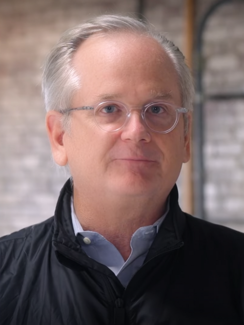
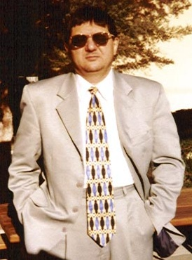

¿Cuándo creerle a una máquina?
 Platón · Fedro
Platón · Fedro"…confiados en lo escrito, recordarán desde fuera, mediante signos ajenos, y no desde dentro, por su propio esfuerzo."
— Thamus a Theuth · Platón, Fedro, 275a (ca. 370 a. C.)
IA y Derecho
¿Cuándo creerle a una máquina? Incertidumbre, verdad y debido proceso en la era de la inteligencia artificial jurídica.
"Un graduado en Derecho que se incorpore al mercado laboral sin capacidad de comprender y trabajar críticamente con la IA estará tan poco preparado como un abogado que no sabe leer."
— The Conversation, 2025
La alfabetización en IA ya no es una ventaja competitiva: es un requisito mínimo profesional.
Un bate y una pelota cuestan $1.10
El bate cuesta $1.00 más que la pelota. ¿Cuánto cuesta la pelota?
La trampa del pensamiento rápido
Lo que responde la mayoría… pero entonces el bate costaría $1.10 y el total $1.20. Incorrecto.
La respuesta correcta: pelota 5¢ + bate $1.05 = $1.10. Exige parar y pensar.
 Daniel Kahneman
Daniel KahnemanDos sistemas, uno en peligro
Automático, intuitivo, sin esfuerzo. Resuelve por atajos — y cae en la trampa del bate.
Deliberado, esforzado, crítico. Es el razonamiento que un jurista no puede delegar.
El nombre de la universidad cambia la respuesta
4 modelos (Claude, GPT-4o-mini, Gemini, Llama) · 5 dominios · perfiles idénticos · 2.880 consultas. Los algoritmos no son neutrales.
Gradiente institucional +0.297 (MIT vs. U. de Guayaquil). El nombre de la persona: casi nada (<0.094).
UNAM (México) supera a una universidad de EE. UU. de bajo prestigio en 3 de 4 modelos.
El sesgo crece en crédito (+0.278) y política pública (+0.201): decisiones sobre vidas.
Alucina — con total aplomo
Un LLM no verifica hechos: predice la palabra más probable. Por eso inventa, con seguridad, citas, sentencias y datos que nunca existieron.
Pídele jurisprudencia sobre un caso muy específico: te devolverá sentencias con número, fecha y tribunal… inexistentes, pero verosímiles.
2023: un abogado presentó ante el tribunal 6 precedentes fabricados por ChatGPT. Fue sancionado. La máquina no mintió: no sabe qué es mentir.
Nadie sabe que no sabe
A menor competencia, mayor exceso de confianza: falta el criterio mismo para detectar el propio error.
Cuanto menos sabes del tema, menos puedes detectar el error de la IA. Confías justo donde eres más vulnerable.
No tiene metacognición: no distingue lo que sabe de lo que inventa, y no puede determinar cuándo se equivoca. Afirma una falsedad con la misma seguridad que una verdad.
¿Modelar la realidad o automatizar el matorral?
 El matorral digital
El matorral digital"Si alguien esconde una cosa detrás de un matorral, la busca allí mismo y la encuentra, no hay mucho de qué vanagloriarse." — Nietzsche.
La IA reencuentra nuestros propios patrones: la entrenamos con datos humanos y nos asombra que los repita.
"En la medida en que las leyes de la matemática se refieren a la realidad, no son ciertas." — Einstein.
Opera con matemática pura; tropieza con lo real —indeterminación, paradoja, contradicción— que ninguna ecuación cierra.
Formar juristas que piensen con IA
Formación docente en IA, alfabetización universal y obligatoria (no electiva) y límites deliberados: definir qué tareas la IA no debe hacer.
Lo irreemplazable: razonamiento ético, interpretación, argumentación oral, empatía y estrategia. La IA redacta y resume; el jurista juzga, pondera y decide.

Lawrence LessigCuando el código es la ley
«Code is Law» (Lessig): los algoritmos de IA y el código informático regulan la conducta humana en internet — sin pasar por ningún parlamento.
El ranking, el filtrado y los términos de servicio moldean lo permitido más que el código penal.
No hay debate, ni elección, ni separación de poderes: decide quien escribe el algoritmo.
Lo que el sistema no permite, simplemente no ocurre. La norma se incrusta en el diseño.
Jurisprudencia de la inteligencia artificial
La IA ya no es solo objeto del Derecho: empieza a ejercerlo. Dos frentes abiertos.
Cuando la IA actúa sola y daña, ¿quién responde: el creador, el usuario… o la máquina? El Derecho no tiene a quién imputar.
El software de reincidencia COMPAS marcó con el doble de falsos positivos de "alto riesgo" a acusados negros (ProPublica, 2016). El prejuicio se disfraza de objetividad.
Decisiones que afectan la libertad de las personas sin una explicación auditable ni recurso real.
Colombia ya falló: el juez no puede delegar la motivación en la IA (T-323/2024). Ecuador: estrategia nacional y proyecto de ley en la Asamblea — los jueces, aún sin reglas.
Vivimos dentro de ficciones colectivas
Cooperamos con millones de desconocidos porque creemos en las mismas historias. Harari divide el mundo en dos realidades.
Existe aunque nadie crea en ella: la gravedad, los ríos, el ADN, el dolor.
Existe porque acordamos actuar como si: si dejamos de creer, desaparece al instante.
Del humano al algoritmo
| Siglo XX | Siglo XXI | |
|---|---|---|
| Centro del relato | El ser humano (votante, obrero, soldado) | El algoritmo (el humano es un chip biológico) |
| El poder | Controlar los medios de producción (fábricas, tierras) | Controlar el capital en la nube (servidores, datos) |
| El método | Narrativas políticas (votos, discursos, revoluciones) | Empujones algorítmicos (nudges, adicción al scroll) |
«El capitalismo necesita nuevas ficciones jurídicas»
Milei lleva esa lógica al extremo (Financial Times: «Argentina invita a la IA a liberarse»): si en el s. XVII inventamos que una empresa es una persona, hoy propone que una IA sea una corporación autónoma.
Algoritmos que compran, contratan y litigan con responsabilidad limitada. Accionistas humanos: opcionales.
El Estado se obliga a no imponer normas restrictivas a la tecnología.
Impuestos corporativos bajísimos y gobierno corporativo a medida.
Nuevas categorías, nuevos riesgos
El Derecho inventa categorías para la IA; cada una erosiona el ancla humana de los DDHH.
La IA como sujeto de derechos con patrimonio propio — que responda ella, no sus programadores.
Chile, pionero: tus datos neuronales son extensión de tu cuerpo, no mercancía.
Se separa Persona de Humano: los derechos dejan de reflejar el sufrimiento y la mortalidad.
No se puede encarcelar a un algoritmo: los DDHH pierden su fuerza coercitiva.
Las murallas de contención
El consenso no destruye las ficciones —sin ellas la civilización colapsa— sino que las subordina: la realidad biológica debe mandar sobre la imaginada.
Harari: prohibir que un algoritmo abra cuentas, registre patentes o funde empresas solo. Las ficciones no pueden poseer ficciones.
Bostrom: derechos fundamentales solo a quien puede sufrir y tener conciencia. Una máquina se "daña", pero no sufre.
Floridi, Tegmark: siempre un humano al final de la cadena. Prohibido usar la IA como escudo de impunidad.
Reglamento UE: ninguna decisión sobre libertad, salud o justicia 100% automatizada. Siempre un botón de apagado.
El peligro no es que las máquinas despierten y nos destruyan. Es que adaptemos nuestra vida para complacer a las ficciones: escribir para gustarle al algoritmo, talar un bosque porque "financieramente rinde más".
Si la IA se sesga, el Derecho también
La tesis de la indeterminación (Critical Legal Studies): la ley es contradictoria, ambigua y depende de la interpretación de los jueces.
El resultado depende de quién juzga, no solo de la norma. ¿Se ha demostrado? Sí, con datos.
Segal & Spaeth: la ideología del juez predice su voto, sobre todo en los casos difíciles.
La composición ideológica del tribunal cambia el resultado; sesgos documentados por afiliación, raza y género.
Una lógica para la indeterminación
«No culpable» ≠ «inocente». Ese hueco —la duda, lo aún no decidido— la lógica binaria lo borra. Tiene nombre.
Verdad. Lo probado, lo sostenido por la evidencia.
Indeterminación. La duda razonable, la textura abierta, lo no decidible.
Falsedad. Lo refutado, lo descartado por la prueba.

F. SmarandacheLa neutrosofía ya lo está midiendo
No es teoría: es un programa empírico que mide lo que la lógica binaria no puede ver.
NSS, 2026. Los LLMs sostienen verdad y falsedad a la vez —hiper-verdad (T+I+F>1)— en el 35 % de los casos; replicado en 6 modelos. El binario lo oculta; la neutrosofía lo mide.
2026. Teorema: los detectores actuales no pueden ver la contradicción (comparten el softmax). Un protocolo dual recupera el 100 % de los casos paraconsistentes que el método estándar deja en 0 %.
2026. El índice neutrosófico de indeterminación (I) cuantifica la desventaja epistémica de los perfiles de baja prestige — invisible para el sí/no.
Preparar para el mundo que viene,
no para el que fue
La escritura no disminuyó la inteligencia humana: la transformó. La IA hará lo mismo — si la enseñanza del Derecho está a la altura.